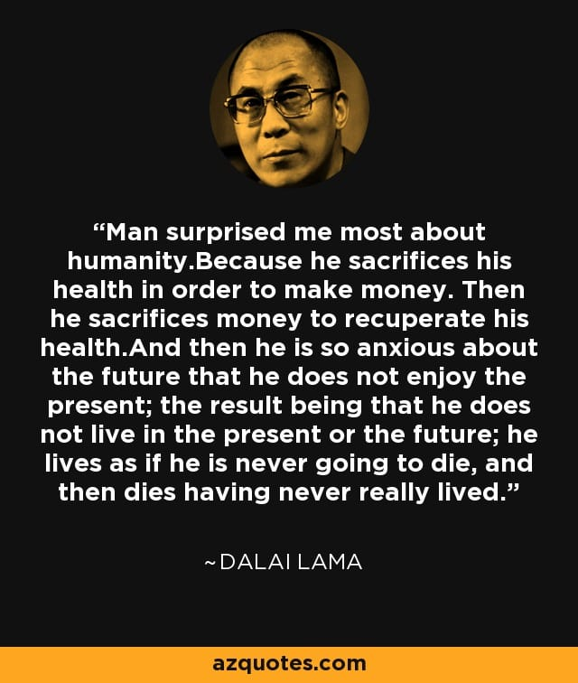

 One of the primary fear of the future an average man has stems from the "abstract idea" of how physical discomfort would feel like during old age just prior to the point of death and how terrible it might be.
This primary fear is the main driver behind the average man's continued effort to accumulate resources of various forms. It is done with hopes to alleviate that "discomfort" when it does eventually come.
The problem with that mode of thinking is the future is unknowable and man ends up wasting his precious limited life span over provisioning, not to mention it's overall negative impact on the environment.
An alternate approach as practiced in various ascetic traditions is to steadily build the ability to keep equanimity at various thresholds of discomfort through daily practice. This curtails over-provisioning , frees up precious time to do more meaningful stuff and is generally good for the environment.
Related references: - Diogenes - Seneca - Meditations, Marcus Aurelius - Vipassana mediation - TaoDeChing, Lao Tze - The Tiger's Cave, Trevor Leggett - Zen mind, Beginner's mind, Shinryu Suzuki - The book of five rings, Musashi